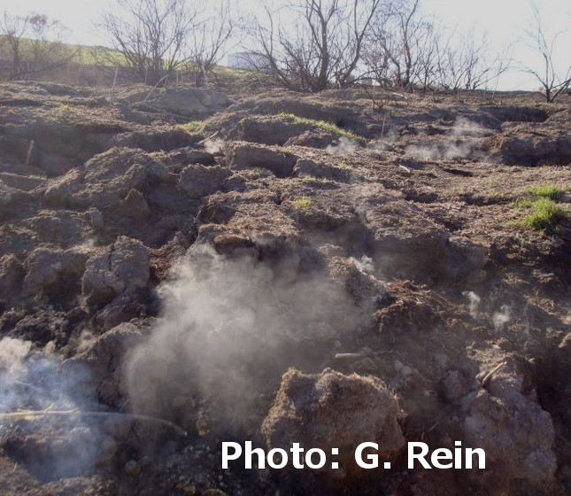
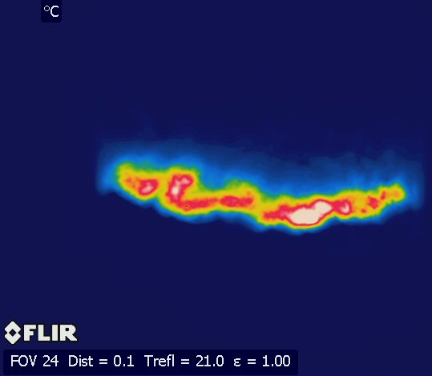
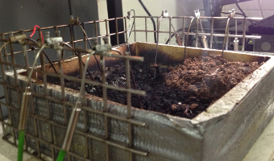

Smouldering Fire in Peatlands
People:
Nuria Prat,
Claire Belcher,
Rory Hadden,
Guillermo Rein,
Jon Yearsley

Our research focuses on a form of combustion called smouldering and its propagation through organic soils, such as peat. Smouldering is very different from flaming combustion (Table 1).
Our research aims to improve our understanding of smouldering fire phenomena in natural peatlands, and eventually inform the policy and management of smouldering peatland fires.
Table 1: Some differences between smouldering and flaming combustion
|
Impact |
Flame |
Temperature (degrees C) |
Propagation |
Spread Rate (cm/hour) |
| Flaming |
vegetation |
yes |
1500 |
fast |
100 |
| Smouldering |
soil |
no |
500-700 |
slow |
<5 |

Laboratory Experiments

We run small-scale laboratory experiments. In these experiments we mimic the heterogeneous moisture distribution found in real peatlands and record the propagation of the smouldering fire using infra-rad cameras (pictured right), visual images, thermocouples and changes in mass.

Publications
- Stracher GB, Prat-Guitart N, Nugent C, Mullen E, Mitchell FJG, Hawthorne D, Belcher CM, Yearsley JM. 2019. Peat fires in Ireland. Chapter 20, Coal and Peat Fires: A Global Perspective, Ed G.B. Stracher, Vol 5, p451-482.
DOI: 10.1016/B978-0-12-849885-9.00020-2
- Prat-Guitart, N., Belcher, C.B., Thompson, DK, Burns, P., Yearsley, J.M., 2017. 'Fine-scale distribution of moisture in the surface of a degraded blanket bog and its effects on the potential spread of smouldering fire. Ecohydrology.
[
Weblink
 ]
]
- Prat-Guitart, N., Rein, G., Hadden, R.M., Belcher, C.M., Yearsley, J.M., 2016. Effect of spatial heterogeneity in moisture content on the horizontal spread of peat fires. Science of the Total Environment, Vol. 572, p1422-1430.
[
Weblink ]>
- Prat-Guitart, N., Rein, G., Hadden, R.M., Belcher, C.M., Yearsley, J.M., 2016. Propagation probability and spread rates of self-sustained smouldering fires under controlled moisture content and bulk density conditions. International Journal of Wildland Fire, Vol 25, p456-465. [ Weblink ]
- Prat-Guitart, N., Hadden, R.M., Belcher, C.M., Rein, G., Yearsley, J.M., 2015. Infrared image analysis as a tool for studying the horizontal smoldering propagation of laboratory peat fires, in: Stracher, G.B., Prakash, A., Rein, G. (Eds.), Coal and Peat Fires, A Global Perspective. Peat - Geology, Combustion and Case Studies. Elsevier, Amsterdam, pp. 121–139.
[
Weblink ]
- Prat N., Belcher B.,Hadden R., Rein G., Yearsley J. (2015) A laboratory study of the effect of moisture content on the spread of smouldering in peat fires, FLAMMA, Vol. 6, Issue 1, p35-38 [
Weblink ]
- Hudspith, V. a, Belcher, C.M., Yearsley, J.M., 2014. Charring temperatures are driven by the fuel types burned in a peatland wildfire. Frontiers in Plant Science. (5), 714.
[
Weblink ]
- Prat, N., Hadden, R., Rein, G., Belcher, C., Yearsley, J., 2013. Effect of peat moisture content on smouldering fire propagation, in: Wade, D., Fox, R. (Eds.), Proceedings of 4th Fire Behavior and Fuels Conference. International Association of Widland Fire, Missoula, USA, pp. 248–250.
[
Weblink ]
- Yearsley, J., Belcher, C.M., Hadden, R.M., Prat, N., Rein, G., 2013. Linking smouldering experiments with simple cellular automata models of smouldering fires, in: Wade, D., Fox, R. (Eds.), Proceedings of the 4th Fire Behaviour Conference. International Association of Wildland Fire, Missoula, USA, pp. 156–158.
[
Weblink ]
- Belcher, C.M., Yearsley, J.M.., Hadden, R.M., McElwain, J.C., Rein, G., 2010. Baseline intrinsic flammability of Earth’s ecosystems estimated from paleoatmospheric oxygen over the past 350 million years. Proceedings of National Academy of Science (107), 22448–22453.
[
Weblink ]